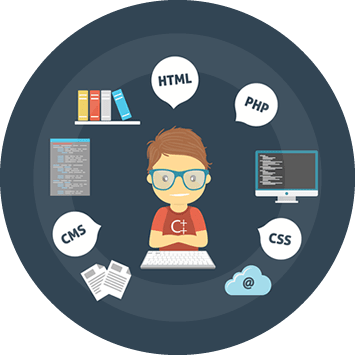
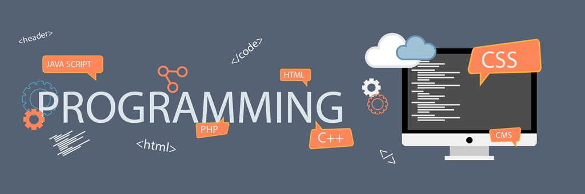

web yazılım
Web Tabanlı Yazılım Nedir ?
Günümüz internet dünyasında, web yazılımlar adeta hayat kurtarır. Çünkü siz nerede olursanız olun, eğer bulunduğunuz yerde bir internet bağlantısı varsa, web tabanlı yazılımınız sayesinde web siteniz üzerinde çalışabilirsiniz. Ayrıca Adana web tabanlı yazılım sahibi firmaların kullanıcıları tek bir “sanal havuz”da çalışabilir, birbiriyle interaktif olarak bilgi paylaşabilir. Böylece, koordinasyon daha kolay sağlanır, işler pratik bir hâl alır ve verim artar. Adana Web yazılım, işinizin verimini yükselten, ofisiniz dışında istediğiniz her yerden kullanabileceğiniz, dolayısıyla tek bir bilgisayara bağımlı olmaktan sizi kurtaran ve kendisini otomatik olarak güncelleyebilen, web tarayıcısı programı demektir.
Web yazılımlar, firmanız için kurumsal ve profesyonel çalışmayı kolaylaştırır ve veriminizi gözle görülür bir şekilde artırır. Ayrıca, herhangi bir uyumluluk sorunu yaşamadığı için her işletim sisteminde hiçbir sıkıntı çıkarmadan rahatlıkla çalışır. Eski yazılımlar sadece belirlenmiş olan işletim sistemleri için tasarlanırdı. Örneğin, bazı yazılımlar sadece Windows’ta, bazıları ise sadece Mac ya da Linux’ta çalışırdı. Ama Adana Adana web yazılım, bir web tarayıcısı ile bir internet bağlantısına ulaşabildiğiniz her işletim sisteminde, Mac, Windows, Linux vb. ayırt etmeden çalışır.
Günümüzde bilgisayarlarımızda yaşadığımız en büyük problemlerden biri de kapasite sorunudur. Adana web yazılım, size bu sorunu da yaşatmaz çünkü bilgisayarınıza ekstra bir yük yüklemezler. Ayrıca herhangi bir güncellemeye ihtiyaç duyduklarında ekstra bir yazılıma ihtiyaç duymazlar.
Adana Web tabanlı yazılımlar, otomatik olarak güncellendiği için sizin güncellemeleri manuel olarak indirip, kurmanız gerekmez ve bu da size büyük bir zaman kazandırır. Ayrıca bu özellik sizin her zaman, en güncel ve en yeni özellikleri kullanmanıza zemin hazırlar.
Eğer sıkça yedekleme yapan bir kurumsanız, web yazılımlar tam size göre, çünkü web tabanlı yazılımlar yedeklerinizi birden fazla yerde tutarak, güvenliğinizi artırmaktadır. Siber saldırılara, virüslere karşı güvenlik denetimleri kontrol edilir ve otomatik olarak güncellenir. Bu sayede bilgileriniz, güvenli bir şekilde saklanmış olur.
Web tabanlı yazılımları kullanmak, zaman, kapasite, güvenlik ve güncellik gibi birçok açıdan size kazanç sağlar, günümüzde de birçok profesyonel kurum ve kuruluş bu tarz yazılımlar ile çalışmaktadırlar.
Web Sitenizi Sürekli Güncel Tutmak
Teknolojinin her kolunda olduğu gibi web tasarımında da her gün yenilikler çıkmakta ve insanlar bazı zamanlarda bu yeniliklere ayak uydurmakta zorlanmaktadır. Sürekli olarak yapılması gereken teknik işler ve güncellemeler bir yana web sitesinin içeriğinin güncellemesi ve içerikte belli başlı düzenlemeler yapılması, bir web sitesi yöneticisi için büyük bir iş yükü ve zaman kaybı demektir. Ama gelişen teknoloji ile birlikte web sitelerimiz de bu hıza ayak uydurdu. Artık en basit web sitelerinden tutun da en kapsamlı web sitelerine kadar tüm web sitelerini hızla içerik değiştirebilmektedir.
Örnek vermek gerekecek olursa, günümüzde her dakika yeni bir haber ajanslar tarafından yapılmakta ve gerek televizyonlar gerek radyolar gerekse de internet habercileri tarafından anbean yayımlanmaktadır. Bir günde onlarca kez içeriğini değiştiren bir haber sitesinden bahsedecek olursak, bu haber sitesi belli bir teknik altyapıya sahip değilse, bu o web sitesinin yöneticilerine çok zorluklar yaşatabilir. Çünkü bir web sayfasının kaynağında değişiklik yapmak, birçok kişi için zor bir durumdur. Bu durumda imdadımıza editlenebilen web sitesi tasarımları yetişmektedir.
Peki, nedir editlenebilen web sitesi tasarımları ?
Editlenebilen web sitesi tasarımları, web sitesinin kaynak yapısına müdahale edilmeden sadece içerik ve tasarımın bir yönetici tarafından, web sitesinin yönetici panelinden değiştirilebildiği kolay, anlaşılır ve rahat uygulanabilir web sitesi formatıdır. Bu web sitesi tasarımları sayesinde sahip olacağınız yönetici paneli ile, istediğiniz zaman istediğiniz yerde web sitenizdeki içerikleri silebilir, düzenleyebilir veya web siteniz için yeni bir içerik üretebilirsiniz. Ayrıca web sitenizde bulunan fotoğrafları da gayet rahat bir şekilde silebilir veya yeni bir fotoğraf paylaşabilirsiniz. Web sitenizi yedekleyebilir, web sitenizin teması, rengi, logosu kısacası aklınıza gelebilecek her şey üzerinde düzenlemeler yapabilirsiniz. Web sitenizde, bir sanal marketiniz varsa, yani siteniz üzerinden satış yapıyorsanız, bu yönetici paneli sayesinde, sitenize yeni bir ürün ekleyebilir veya var olan bir ürün üzerinde fiyat, teknik özellik, fotoğraf veya açıklama gibi birçok değişiklik yapabilirsiniz.
Günümüzde, böyle bir web sitesine sahip olmanın sizin için birçok avantajı olacağını unutmayın.

Web Sitesi Tasarımında Uzmanlık
İnternet dünyası, hem insanlar için hem de firmalar için çok önemli bir tanıtım alanıdır. Webmasterlar, web sitelerini bu bilginin öneminin farkında olarak hazırlamaya çalışır ve bunun için yeri geldiğinde gerek işverenden gerekse meslek arkadaşlarından yardım alırlar. Çünkü bir webmasterın sizin web sitenize katacağı ufak bir renk ya da vereceği küçük bir fikir sizi, firmanızı, markanızı ve sizin müşteri potansiyelinizi yüksek oranda etkileyebilmektedir. Bu yüzden webmasterlar, alanında uzman, özgün, yaratıcı ve yenilikçi olmak zorundadır.
Bir webmasterın içeriklerinizi oluştururken kullandığı dilin modern, kurumsal ve etkileyici olması, sizin profesyonel bir firma olduğunuzun ölçütüdür. Güzel ve etkileyici bir dil müşteriye güven verecektir. Bu nedenle, Adana web tasarım konusunda iş yapacağınız insanlar, sizin istediğiniz iş için tüm bilgi birikimlerini profesyonelce ortaya koymak ve sizin içinize sinen, başarılı bir iş yapmakla görevlidirler.
Bir markaya veya bir firmaya ait web siteleri, potansiyel müşterinin ilgisini çeken en önemli tanıtım aracıdır. Bu yüzden müşterileri size çekecek orijinal fikirler bulmak bir webmasterın işleri arasındadır. Webmasterın alanında uzman olması bu yeteneklere sahip olduğunu gösterir. Örneğin bir webmaster, sizin işinize başlamadan önce, sektörünüzdeki diğer markalar ve öncülere bakarak onların reklam stratejilerini incelemeli ve hedef kitlenin o sektörde daha çok nasıl bir reklam kampanyasından hoşlanabileceğini tahmin edebilmelidir. Bunların ardından webmasterın görevi sizin için göze hoş gelen, yeri geldiğinde kulağa hitap eden, özgün bir Adana web sitesi tasarlamaktır.
İlk intiba her yerde olduğu gibi, internet dünyasında da çok önemlidir. Eğer potansiyel müşterinizi sizinle karşılaştığı anda etkilemeyi başarırsanız, müşteri web sitenizde vakit geçirmeye başlayacaktır.
Bu yüzden müşterinin ilk izlenimi çoğu zaman hoşuna gidebilecek görsellere, yazılara veya dikkatini çekebilecek herhangi bir içeriğe bağlıdır. Ama tüm bunlar tek başlarına müşteri üzerinde bir etki kuramazlar. Bu yüzden web sitenizin az önce saydığımız özelliklere ait bir tasarımı olmasının yanı sıra altyapısı ve performansı da büyük önem taşır.
Bu sebeple web sitenizi tasarlayacak olan kişilerin profesyonel olması, ortaya çıkacak web sitesinin kalitesini artırır. Uzmanlık her zaman kazandırır.
Web Sitesi Tasarlamak İçin Kod Bilmek Yeterli Mi ?

Bildiğiniz gibi, teknolojiye, bilgisayarlara, programcılığa ve programlama dillerine ilgi duyan ve kendisini bu konularda geliştirmek için büyük çaba sarf eden herkes, gerek donanım gerek yazılım gerekse programlama ve kodlama öğrenip, kendi web sitesini kurmak ve bu işten para kazanmak ister.
Para kazanmak istenilen web sitelerinin elbette ki bir konsepti bir projesi olmak zorunda. Bu projeler kimi zaman orijinal bir fikir kimi zaman bir başka fikirden ilham alınarak oluşturulmuş bir ürün ya da deneysel bir iş olabilir. Ayrıca her işte olduğu gibi web sitesi hazırlama, yayınlama ve başarıya ulaşma işinde de bazı aksaklıklar olabilmektedir. Bu aksaklıklar ise bazen projenin yavaşlamasına, bazen fikirde ufak tefek değişiklikler yapılmasına bazen ise projenin iptal olmasına sebep olabilmektedir.
İşte bu tip durumlarla karşılaşıldığında sık sorulan sorulardan birisi de “Web sitesi tasarlamak için kod bilmek yeterli mi ? ” oluyor. Gelin, tecrübemiz öncülüğünde size bu sorunun cevabını verelim.
Kod bilmek tabii ki, bir web sitesi sahibi için çok önemli bir özellik. Çünkü eğer kod bilirseniz, web siteniz üzerinde yapacağınız değişiklikleri zaman kaybetmeden halledebilirsiniz. Kod bilmeyen bir web sitesi sahibiyle karşılaştırıldığında siz elbette ki ondan birkaç adım önde olacaksınız.
Fakat bir de işin başka bir yönü var. Adana web tasarım ve Adana web yazılım işlerinin tüm bilgisi kodlama değildir. Yani sadece kodlama bilmekle, web sitesi tasarlayamaz, web tabanlı yazılımlar geliştiremezsiniz. Yayına hazırlanmış bir web sitesi her şeyiyle bir bütün olmak, altyapısı sağlam olmak, güvenli olmak ve aynı anda birçok işlemi yürütebilmek zorundadır.
İşte tüm bu zorunlulukların üstesinden gelebilmek için, alanında uzman, profesyonel bir webmaster ile çalışmanızın önemi görmezden gelinemez. Eğer yüksek verim alabileceğiniz bir Adana web sitesi sahibi olmak istiyorsanız, sizin web sitenizden önce yüzlerce web sitesi hazırlamış, deneyimli bir webmaster ile çalışmanız gerekmektedir.
Adana web tasarım ve web yazılım işleriniz için bir profesyonele güvenmek yapacağınız en iyi iş olacaktır. Ne demiş atalarımız, “Bir bilene sormak lazım.”